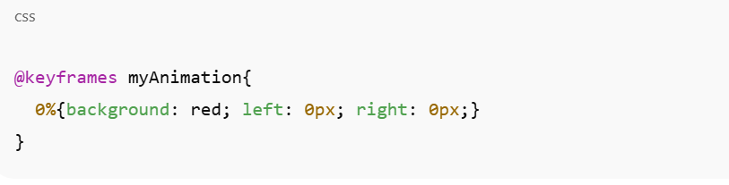
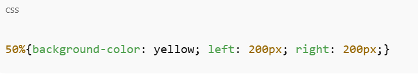
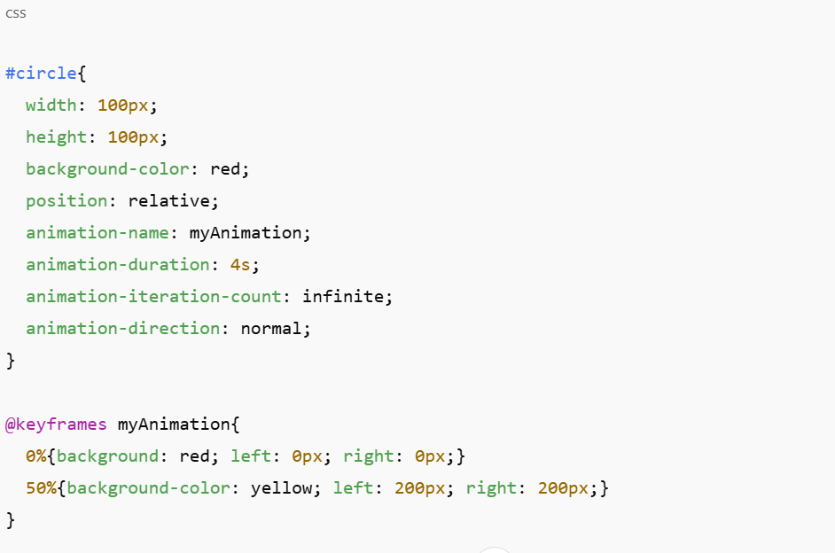
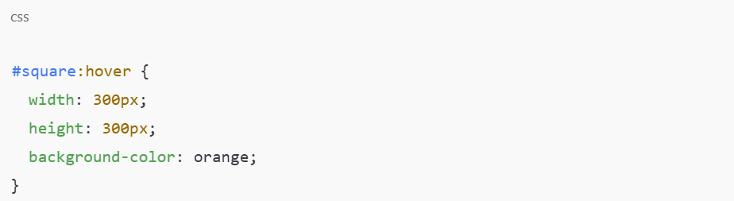
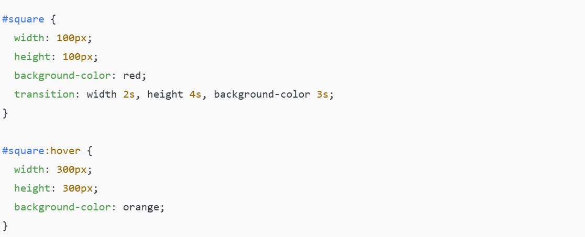

övanför så ser vi ett exempel på CSS animation "förklaring nedanför"
Vi ser här ovanför att det finns en fyrkantig ruta som rör sig från vänster till höger till en specifik position, och samtidigt ändrar färg från röd till gul, i en loop.
Du börjar först med HTML-koden, till exempel med en "div" som är ett barn till något annat som vi kallar "main", vilket är föräldern till "div". I div-egenskapen skriver du det id du själv vill ha, i det här fallet är mitt id "square". För att interagera med egenskapen skriver du #circle. Du kan skapa vilken form du vill, precis som med andra egenskaper, till exempel "width: 100px; height: 100px;" och "background-color: red;". Resten i CSS-klassen #square är animationerna – det är här vi får fyrkanten att röra sig och ger den ett ”bestämt namn” (viktigt!). Resten är:
animation-name: myAnimation; animation-duration: 4s; animation-iteration-count: infinite; animation-direction: normal;
Animationsnamnet betyder att det är den valda egenskapen som vi senare kommer att använda för att bestämma hur objektet ska röra sig. animation-iteration-count är hur många gånger keyframes kommer att köras, vilket här är oändligt.
Riktningen (animation-direction) anger på vilket specifikt sätt objektet rör sig, och här har vi satt den till "normal".
För den andra delen av CSS-koden, som gör att objektet rör sig, gör du så här:

Detta är startpositionen och riktningen som animationen börjar från. Här ser vi att den startar vid 0 %.
Koden under detta är:

Detta innebär att animationen går från 0 % till 50 % av animationens förlopp, och left- och right-egenskaperna visar hur många pixlar objektet kommer att förflytta sig från startpunkten. Allt ser ut så här i slutändan:

Och det är så animationer fungerar, helt enkelt.
CSS transitions
I grunden är detta ganska mycket enklare jämfört med animationer. I CSS behöver du bara använda två egenskaper, och för att få HTML-koden att fungera gör du samma sak som tidigare med ett id som är ett barn till något annat, till exempel en "section". I det här fallet är div-elementets id "square".
I CSS gör du samma sak genom att ändra elementets utseende, till exempel: width: 100px; height: 100px; Och sedan bakgrundsfärgen, som senare kommer att ändras till en annan färg: background-color: red; Här är egenskapen som bestämmer övergången (transition): transition: width 2s, height 4s, background-color 3s; width är hur mycket elementet expanderar i bredd och hur lång tid det tar i sekunder, height är hur högt det expanderar och hur lång tid det tar, och sedan har vi bakgrundsfärgen som varar i 3 sekunder och som ändras till en annan färg som vi sätter i den andra egenskapen.
Efter det skapar vi en annan klass:
Efter att vi har definierat hur övergången ska ske med transition i den första CSS-regeln, behöver vi också tala om när och till vad förändringen ska ske. Det är här den andra koden kommer in.

I helhet så ser det så här ut
